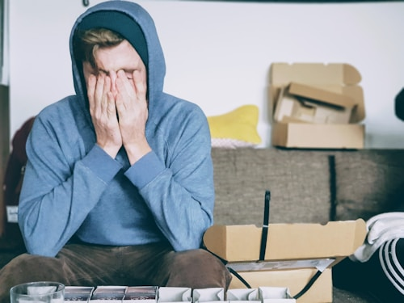

Ana se convence de que lo que siente es confusion. Que son los nervios del ultimo ano, el estres de la graduacion. Que Wes es solo un vecino con quien hizo un trato. Nada mas.
Va al baile con Kevin. Se rie, baila, posa para fotos. Todo se ve perfecto desde afuera. Pero en el momento en que la cancion mas lenta del salon empieza a sonar, Kevin la toma de la mano, y Ana cierra los ojos...
Piensa en Wes.
Termina la noche temprano con un dolor de cabeza que no es exactamente un dolor de cabeza. Tres dias despues se entera de que Wes le conto a Kevin sobre el plan desde el principio. Kevin, que es buena persona, no se enoja. Solo le dice que lo siente. Eso es casi peor.
Wes no le escribe. No la llama. El acuerdo termino y el no tiene nada mas que decirle, aparentemente. Ana se da cuenta demasiado tarde de que durante meses confundio costumbre con amor, y cuando tuvo lo real enfrente, eligio el sueno en vez de la persona.
El lugar de estacionamiento sigue ahi. Vacio. Ana no puede mirarlo sin sentir algo que no sabe como nombrar todavia.
Este es el FINAL MALO. Algunas oportunidades solo se presentan una vez.